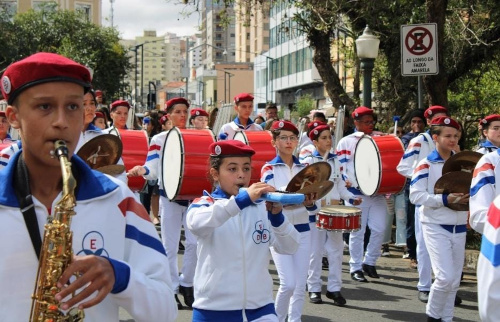

Desde sua fundação, em 1946, a Escola Profissional Dom Bosco tem como missão promover uma educação que vai além da formação técnica e acadêmica. Inspirada nos princípios de Dom Bosco e na tradição salesiana, a escola acredita que a educação também acontece por meio da cultura, da arte e da convivência.
Entre essas expressões, a música ocupa um lugar especial. Para Dom Bosco, ela era uma poderosa ferramenta educativa, capaz de despertar talentos, fortalecer valores e criar um ambiente acolhedor, alegre e participativo. Essa visão continua presente na história da instituição, acompanhando diferentes gerações de estudantes.
Ao longo dos anos, a música esteve presente em celebrações, eventos culturais, apresentações, momentos religiosos e atividades que marcaram a vida escolar. Mais do que um elemento artístico, ela contribuiu para desenvolver a criatividade, a disciplina, o trabalho em equipe e o sentimento de pertencimento à comunidade escolar.

A Escola Profissional Dom Bosco reconhece a música como parte importante da formação integral dos alunos. Ela aproxima pessoas, incentiva a expressão de emoções, preserva tradições e fortalece os laços entre estudantes, educadores, famílias e comunidade.
Mais do que uma atividade complementar, a música representa um dos valores da educação salesiana: formar cidadãos preparados para o futuro sem perder de vista a sensibilidade, a solidariedade e o compromisso com o próximo. Assim, a tradição musical da Escola Profissional Dom Bosco continua inspirando novas gerações e reafirmando o propósito de educar com alegria, respeito e humanidade.
